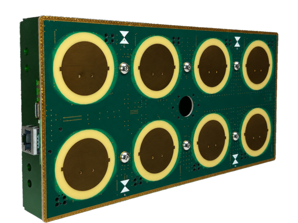
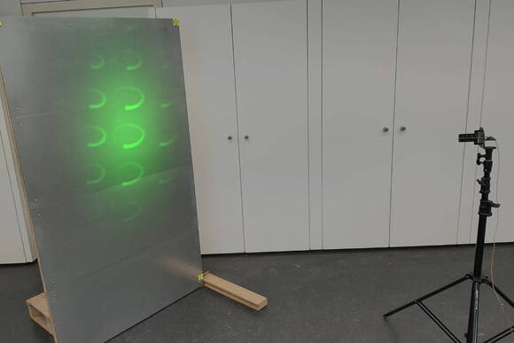

ESPARGOS is finally here: As of now, you can get our phase-synchronized ESP32 antenna array "ESPARGOS One" from buy.espargos.net
A limited first batch is ready to ship immediately, with more units on the way. For now, sales are limited to companies, universities, associations, freelancers, and other organizations in the EU. Sales to private consumers are not yet available, but we hope to expand availability if this first sales round goes well.

A lot has changed since the YouTube video This ESP32 Antenna Array Can See WiFi from over a year ago. The original ESPARGOS prototype had been developed as a research device and was not intended for sale. Since then, we completely redesigned the device for manufacturability at scale and added several capabilities beyond those shown in the original video demonstration. New features include support for WiFi 6 (802.11ax), the ability to measure the polarization of incoming signals, support for manual gain control, improved energy efficiency, and more.
More details can be found in the manual, the datasheet and on the product page. Kits with larger apertures (more antennas) are also available.
Note: The current software assumes some familiarity with the command line and computer networking, so at this stage we recommend ESPARGOS One primarily for researchers and technical users evaluating the platform.
One of the most overlooked properties of a radio signal is its polarization, and the ability to measure it ("polarimetry") is one of our favorite features of ESPARGOS One.
The picture below shows a circularly polarized Wi-Fi signal reflected from a metal wall. The reflection changes the handedness of the circular polarization from LHCP to RHCP. ESPARGOS One makes this effect easy to observe experimentally.

The form on buy.espargos.net lets you request a quote for different ESPARGOS One kits (a single 4 × 2 array, a 6 × 4 kit, or an 8 × 4 kit). It will also let you know if the requested number of devices is in stock. If our inventory is insufficient, you can still request a quote to reserve your position in the queue, but we will only follow up once we can fulfill your request.
Once you receive a quote, the quoted items are reserved for you and ready to ship. This is not a crowdfunding campaign: After payment, your items typically ship the same day or within a few business days.
If you need to order on account (e.g., because you are procuring for a university or other institution), we can accommodate that. Just fill in the form accordingly (with the correct billing address and billing email address), and let us know in the Notes field.